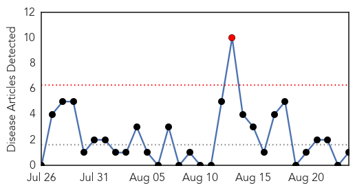
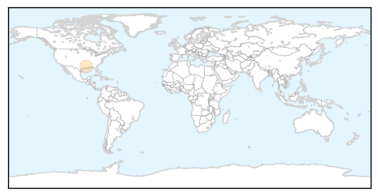
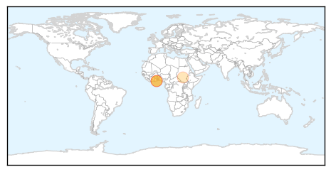
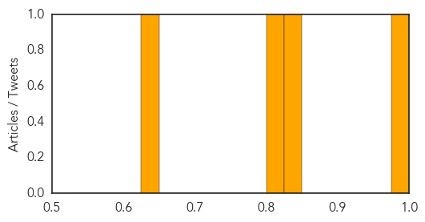

Pertussis
30-Day Web Trend
1 alerts, 0 warnings

30-Day Twitter Trend
0 alerts, 0 warnings

Article Locations
Article Confidences

Top Articles:
Top Tweets:
-
No tweets found for Aug 24, 2014
Cholera
30-Day Web Trend
1 alerts, 3 warnings
30-Day Twitter Trend
8 alerts, 0 warnings

Article Locations
Article Confidences
Top Articles:
Top Tweets:
-
No tweets found for Aug 24, 2014